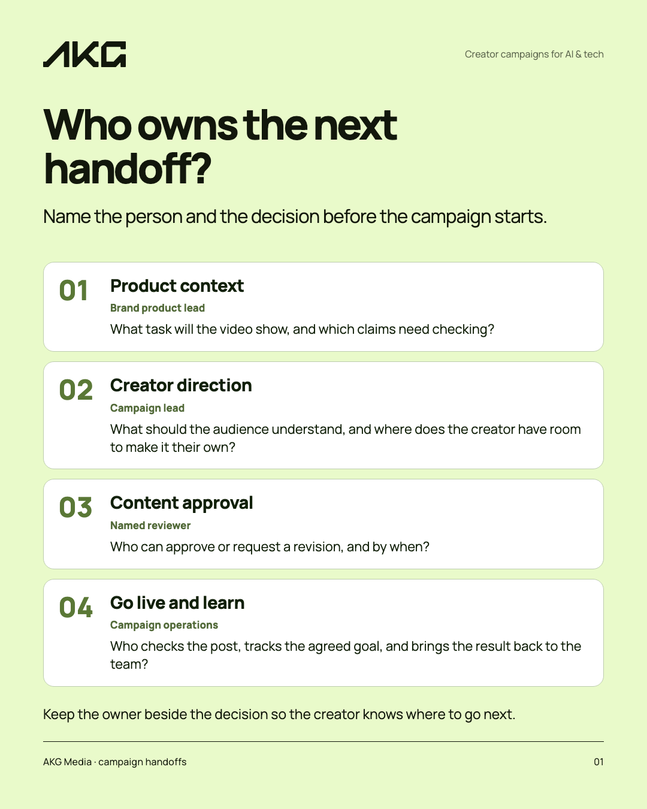
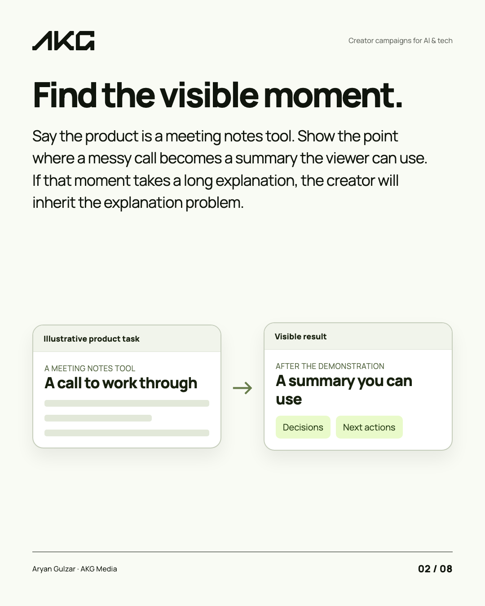
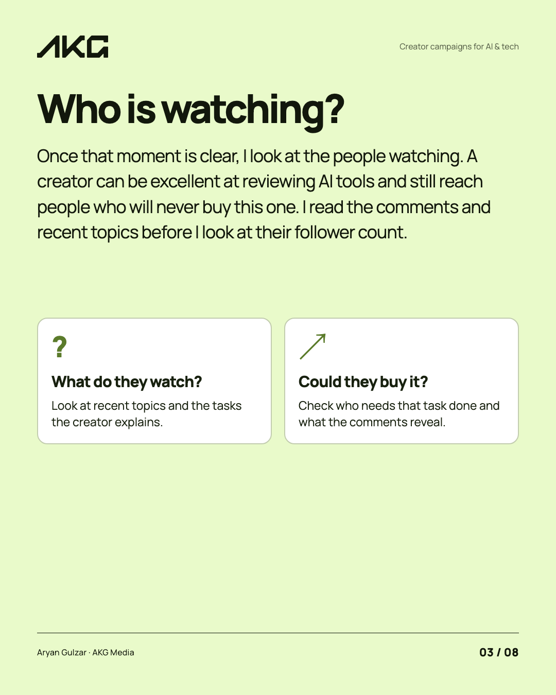
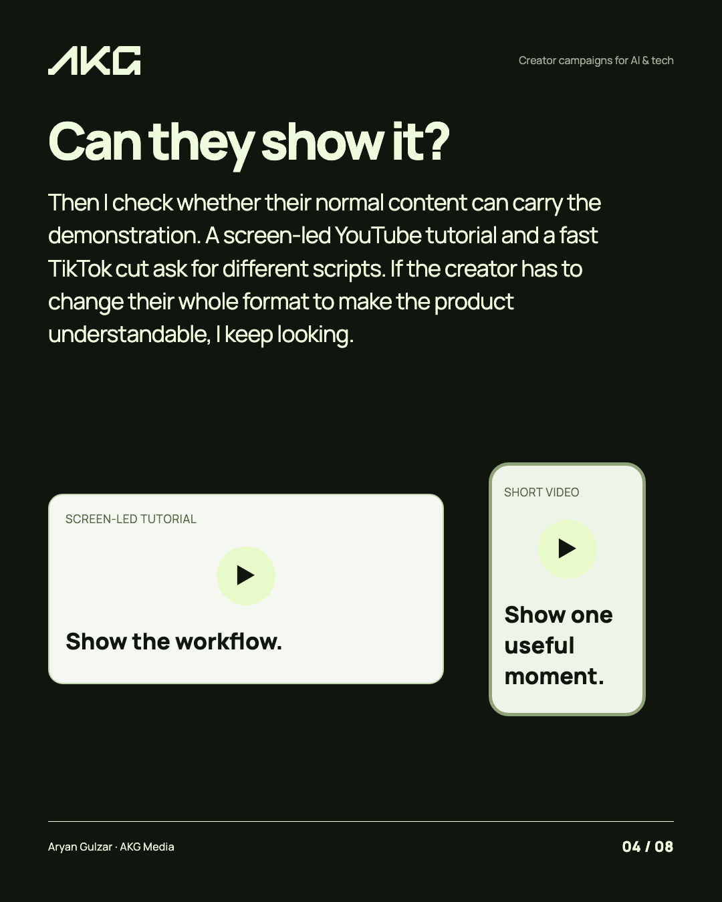
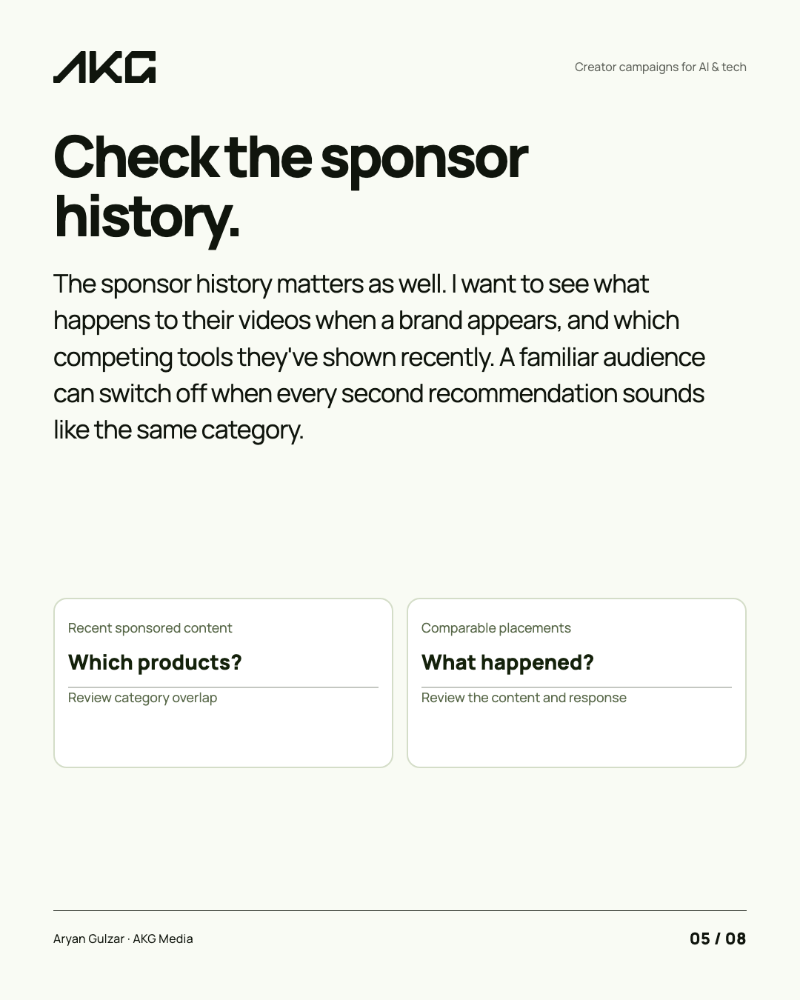
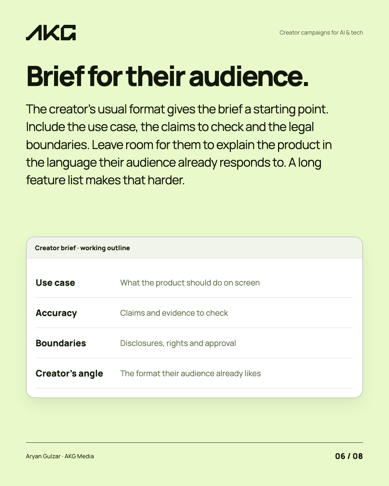
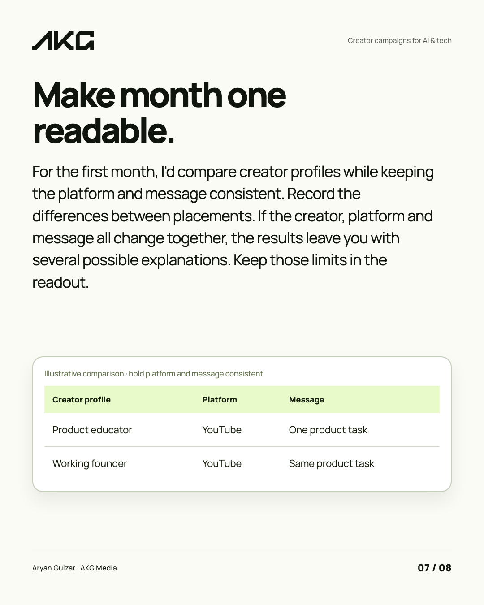
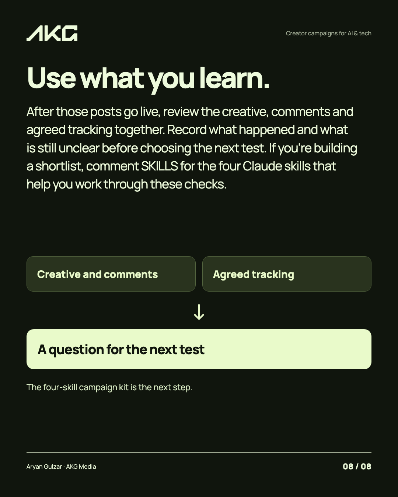
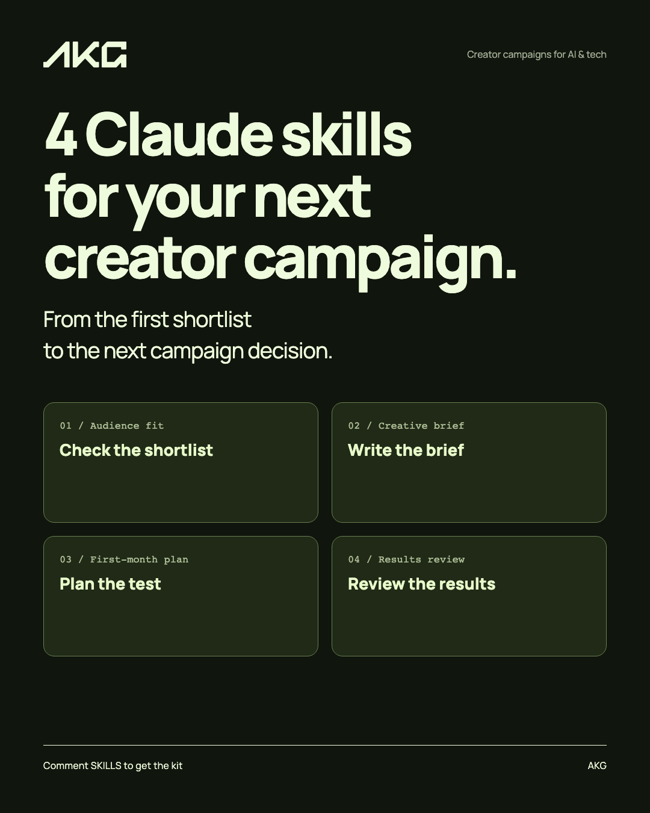

01
Infographic ↗Make the decision easy to follow.
An infographic turns a campaign question into something a buyer can keep.
Prepared for Aryan and AKG Media
Your campaign work gives us the material. Here’s how it could look on LinkedIn, and what I’d run each week.
01 / The carousel
Built around the creator selection decisions AKG makes before a campaign goes live.







Your team’s judgement, made visible.
A single campaign question becomes a useful post that buyers can read, save and discuss with their team.
Swipe the image or use the arrows.
Open full size ↗02 / More ways to show the work

An infographic turns a campaign question into something a buyer can keep.
The same idea can become a short motion piece for the feed.
03 / The writing
Five drafts drawn from your campaign work. Select one to read it as it would appear on LinkedIn.

A sample for your review. The campaign details and voice are yours to approve.
04 / A reason to start a conversation
Posts can lead to a practical resource. This kit gives a marketing team a way to work through a creator campaign, from fit to readout.

Four working skills for creator fit, briefing, a first-month test and the readout. Your team can share the kit with buyers planning a campaign.
Explore the kit ↗A product-specific opportunity brief shows how outreach can start with a useful campaign angle.
05 / How we work
Calls, campaign reviews and your team’s notes give us the ideas.
Four to five posts a week, with design and useful buyer resources.
You check the voice and campaign details before publishing.
I publish, report back and carry the next week forward. Full service also runs outreach and replies.
06 / Choose where to start
Both plans run month to month. Start with content, or add managed outreach and conversations on one profile.
Extra outreach profiles are $1,000 USD/month each, after we confirm fit and enough suitable prospects.